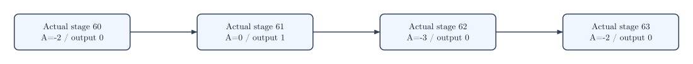
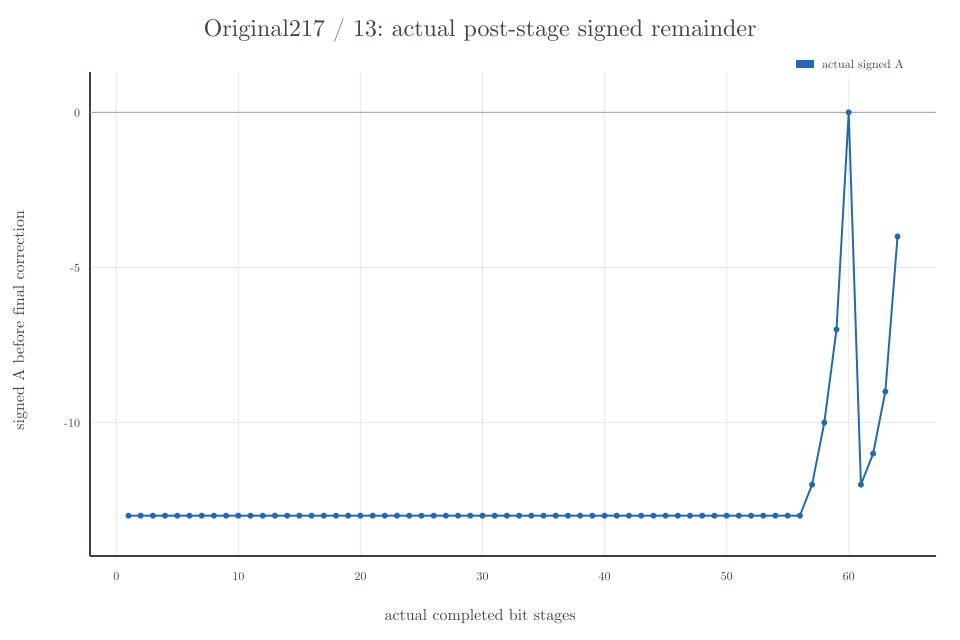
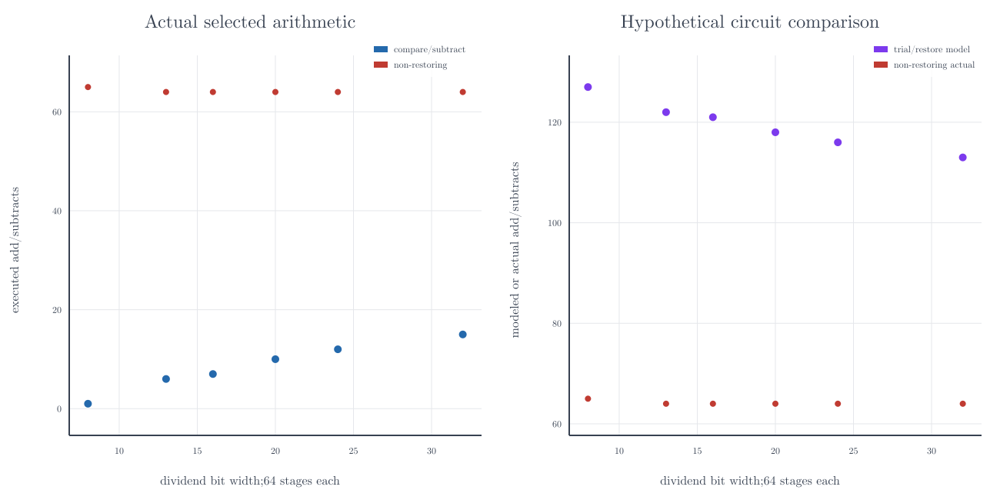
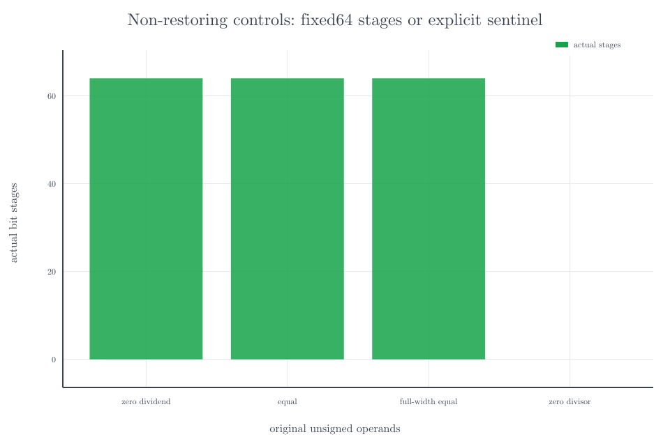

Non-restoring unsigned division
Abstract
Compute exact64-bit quotient and remainder while carrying a signed partial remainder through one add or subtract per bit. Actual native register histories replace the old report-side simulator. The original divisions and six-dividend work study are retained, with the final correction included and the comparison-first software implementation distinguished from a hypothetical subtract-and-restore circuit model.
Carry an overshoot into the next bit
The canonical routine keeps a signed remainder A and a64-bit register Q, initially A=0 and Q=dividend. Each of64 stages transfers Q’s old most-significant bit into A by A←2A+incoming, shifts Q modulo2⁶⁴ and then subtracts D if A is nonnegative or adds D if A is negative. The new sign determines Q’s low quotient bit. A final negative A receives one addition of D. That final correction is actual work, even though no per-stage over-subtraction is immediately restored.
For D>0, the post-stage invariant−D≤A<D keeps the next shifted value within65 magnitude bits. Signed128 arithmetic is therefore sufficient for every unsigned64-bit input. The producer uses multiplication by2 rather than a left shift of a negative signed value. At completion the corrected remainder lies in[0,D), and the emitted quotient satisfies N=QD+R. Native exact full-width checks verify that identity; the report does not infer correctness from a plotted approximate register value.
Inspect the last four actual stages of13/3
The routine still executes64 stages. The diagram shows only its actual last four records, after the leading zero dividend bits have been processed. These are not a separate four-bit algorithm. Exact decimal signed registers come from native high/low magnitude records. The actual final correction turns A=−2 into remainder1, giving quotient4.
#include <dm/dm.hpp>
int main() {
std::filesystem::create_directories("build");
auto t = dm::algorithms::non_restoring_division_trace(13, 3);
dm::graphics::Diagram d;
std::print("| actual stage index | original bit | A before | A shifted | operation | A after | quotient " "output bit |\n| ---: | ---: | --- | --- | --- | --- | ---: |\n");
for (std::size_t i = 60; i < t.steps.size(); ++i) {
auto &s = t.steps[i];
auto before =
dm::algorithms::division_wide_decimal(s.before), shift =
dm::algorithms::division_wide_decimal(s.shifted), after =
dm::algorithms::division_wide_decimal(s.after);
std::print("| {} | {} | `{}` | `{}` | {} | `{}` | {} |\n", i, s.bit,
before, shift, s.subtracted ? "subtract3" : "add3", after,
int(s.output_bit));
d.node(std::to_string(i), {6. * (i - 60), 0},
std::format("Actual stage {}\nA={} / output {}", i, after,
int(s.output_bit)));
if (i > 60)
d.edge(std::to_string(i - 1), std::to_string(i));
}
std::print("\nActual full64-stage result: quotient {}, remainder {}, final correction {}.\n",
t.analysis.result.quotient, t.analysis.result.remainder,
t.final_corrected);
d.save_svg("build/nonrestoring_tiny.svg");
}| actual stage index | original bit | A before | A shifted | operation | A after | quotient output bit |
|---|---|---|---|---|---|---|
| 60 | 3 | -3 | -5 | add3 | -2 | 0 |
| 61 | 2 | -2 | -3 | add3 | 0 | 1 |
| 62 | 1 | 0 | 0 | subtract3 | -3 | 0 |
| 63 | 0 | -3 | -5 | add3 | -2 | 0 |
Actual full64-stage result: quotient 4, remainder 1, final correction true.

Retain all four original divisions
The original pairs217/13,100/7,1000000/999 and(2⁶⁴−1)/3 are preserved. The table compares their exact native results with built-in unsigned division and remainder. The plotted signed register history belongs to the original217/13 run, with all64 actual stages included. Conversion to double occurs only for that display; exact signed values remain available in the native records and decimal formatter.
#include <dm/dm.hpp>
int main() {
std::filesystem::create_directories("build");
std::print("| dividend | divisor | actual quotient | actual remainder | built-in quotient | built-in " "remainder |\n| ---: | ---: | ---: | ---: | ---: | ---: |\n");
for (auto[n, d] : dm::algorithms::nonrestoring_demo_pairs()) {
auto r = dm::algorithms::non_restoring_divide(n, d);
std::print("| {} | {} | {} | {} | {} | {} |\n", n, d, r.quotient,
r.remainder, n / d, n % d);
}
auto t = dm::algorithms::non_restoring_division_trace(217, 13);
std::vector<double> x, y;
for (std::size_t i = 0; i < t.steps.size(); ++i) {
x.push_back(i + 1);
y.push_back(dm::algorithms::division_wide_approximation(t.steps[i].after));
}
auto p = dm::graphics::RPlot::create();
p.lines(x, y, "actual signed A", {36, 105, 172}).points(x, y, "",
{36, 105, 172}, 3).abline_h(0, {148, 163, 184}, 1).title("Original217 / 13: actual post-stage signed remainder").x_label("actual completed bit stages").y_label("signed A before final correction").save_svg("build/nonrestoring_original.svg");
std::print("\nActual final A before correction `{}`, after `{}`; extra addition {}.\n",
dm::algorithms::division_wide_decimal(t.final_before),
dm::algorithms::division_wide_decimal(t.final_after),
t.final_corrected);
}| dividend | divisor | actual quotient | actual remainder | built-in quotient | built-in remainder |
|---|---|---|---|---|---|
| 217 | 13 | 16 | 9 | 16 | 9 |
| 100 | 7 | 14 | 2 | 14 | 2 |
| 1000000 | 999 | 1001 | 1 | 1001 | 1 |
| 18446744073709551615 | 3 | 6148914691236517205 | 0 | 6148914691236517205 | 0 |
Actual final A before correction -4, after 9; extra addition true.

Compare executed work with an explicitly hypothetical model
The old work plot simulated a variable-width trial-subtraction/restoration loop. That differed from both canonical routines, which process64 bits. More importantly, native restoring_divide compares first and subtracts only when the remainder fits. It executes no restoration additions. Its actual subtraction count equals the quotient’s popcount; failed comparisons perform no add-back. Non-restoring executes64 add/subtract operations plus zero or one final correction.
The original six dividends with divisor13 remain, and their effective dividend bit widths identify the fixtures. The first panel compares actual selected arithmetic counts. The second explicitly models a different classical circuit that trial-subtracts on every one of64 stages and adds back after each failed trial:64+hypothetical_restores. That modeled count is derived from actual failed comparisons, not mislabeled as executed software. These are selected operations, excluding comparisons, shifts, guards, loop control and formatting; no timing or CPU instruction cost conclusion follows.
#include <dm/dm.hpp>
int main() {
std::filesystem::create_directories("build");
std::vector<double> x, r_actual, n_actual, hypothetical;
std::print("| original dividend | bit width | actual restoring subtractions | actual restoring " "additions | actual nonrestoring add/subtracts incl final | hypothetical trial/restore model " "|\n| ---: | ---: | ---: | ---: | ---: | ---: |\n");
for (auto n : dm::algorithms::division_work_dividends()) {
auto r =
dm::algorithms::restoring_division_analyze(n, 13), a =
dm::algorithms::non_restoring_division_analyze(n, 13);
x.push_back(std::bit_width(n));
r_actual.push_back(r.subtractions + r.additions);
n_actual.push_back(a.subtractions + a.additions);
hypothetical.push_back(r.bit_steps + r.hypothetical_restores);
std::print("| {} | {} | {} | {} | {} | {} |\n", n, std::bit_width(n),
r.subtractions, r.additions, a.subtractions + a.additions,
r.bit_steps + r.hypothetical_restores);
}
auto layout = dm::graphics::RLayout::create(1, 2);
auto p = dm::graphics::RPlot::create();
p.points(x, r_actual, "compare/subtract", {36, 105, 172}, 5).points(
x, n_actual, "non-restoring", {192, 59, 50}, 4).title(
"Actual selected arithmetic").x_label("dividend bit width;64 stages each").y_label("executed add/subtracts");
layout.add(p);
auto q = dm::graphics::RPlot::create();
q.points(x, hypothetical, "trial/restore model", {124, 58, 237}, 5).points(
x, n_actual, "non-restoring actual", {192, 59, 50}, 4).title(
"Hypothetical circuit comparison").x_label("dividend bit width;64 stages each").y_label("modeled or actual add/subtracts");
layout.add(q);
layout.size(1300, 650).fit_panels().save_svg("build/nonrestoring_work.svg");
}| original dividend | bit width | actual restoring subtractions | actual restoring additions | actual nonrestoring add/subtracts incl final | hypothetical trial/restore model |
|---|---|---|---|---|---|
| 217 | 8 | 1 | 0 | 65 | 127 |
| 4096 | 13 | 6 | 0 | 64 | 122 |
| 65535 | 16 | 7 | 0 | 64 | 121 |
| 1000000 | 20 | 10 | 0 | 64 | 118 |
| 16777215 | 24 | 12 | 0 | 64 | 116 |
| 4294967295 | 32 | 15 | 0 | 64 | 113 |

Zero dividend, equal operands and the legacy zero-divisor sentinel
A zero dividend with nonzero divisor still follows64 bit stages and returns exact zero. Equal full-width operands return1 remainder0. The historical divisor-zero entry point returns{0,0,0}; this is an explicit sentinel, not a defined quotient. Analyzed and traced calls expose valid_divisor=false so the report never treats that sentinel as an arithmetic result. Compatibility with existing callers and tests is retained.
#include <dm/dm.hpp>
int main() {
std::filesystem::create_directories("build");
auto max = std::numeric_limits<std::uint64_t>::max();
std::vector<std::pair<std::uint64_t, std::uint64_t>> pairs{{0, 13},
{13, 13},
{max, max},
{5, 0}};
std::vector<std::string> names{"zero dividend", "equal", "full-width equal",
"zero divisor"};
std::vector<double> steps;
std::print("| control | valid divisor | actual quotient/sentinel | actual remainder/sentinel | actual " "bit stages |\n| --- | --- | ---: | ---: | ---: |\n");
for (std::size_t i = 0; i < pairs.size(); ++i) {
auto[n, d] = pairs[i];
auto r = dm::algorithms::non_restoring_division_analyze(n, d);
steps.push_back(r.bit_steps);
std::print("| {} | {} | {} | {} | {} |\n", names[i], r.valid_divisor,
r.result.quotient, r.result.remainder, r.bit_steps);
}
auto p = dm::graphics::RPlot::barplot(steps, names, "actual stages");
p.title("Non-restoring controls: fixed64 stages or explicit sentinel").x_label("original unsigned operands").y_label("actual bit stages").save_svg("build/nonrestoring_controls.svg");
}| control | valid divisor | actual quotient/sentinel | actual remainder/sentinel | actual bit stages |
|---|---|---|---|---|
| zero dividend | true | 0 | 0 | 64 |
| equal | true | 1 | 0 | 64 |
| full-width equal | true | 1 | 0 | 64 |
| zero divisor | false | 0 | 0 | 0 |

Storage and exact history
Nonzero-divisor work is O(64), with constant driver state. Restoring and non-restoring traces own their original operands, actual results and64 fixed-size bit records. Complete logical policies are5+steps and6+steps respectively, the latter including a final-correction record. Defaults1000000, zero disables, pre-admitted before arithmetic/history allocation. Zero-divisor traces retain only their fixed sentinel metadata. Exact signed magnitudes use two unsigned64-bit words plus sign; decimal formatting and rounded plotting conversion are outside arithmetic counters.
The original intent—carrying overshoots instead of immediate restoration—remains visible in actual records. The corrected work study explains the separate software and circuit models without claiming saved adds that this native comparison-first restoring implementation never executed.
Verification
This ten-report batch passes75 CTest cases,22 directly instrumented ASan/UBSan
cases,122 compiled and executed public examples,538/538 scoped documentation
definitions and ten representative clangd hovers. Independent Python
arbitrary-precision arithmetic verifies69365 captured division records
with656460 checks; native independent polynomial, geometry, finite-range, graph,
ranking and callback checks cover the remaining producers. Frozen valid-input
comparisons preserve Neville recurrences, Newton result/callback paths, complete
byte encodings, switch routes and NSGA-II complete objective-call
sequences/final fronts. Ten checkout headers and ten byte-identical installed
development headers compile independently; an installed-header native consumer
links and runs. All40 complete programs execute, and40 native figures have been
visually reviewed; HTML/Markdown exports preserve computed rows/prose and
identical image bytes. Checks are scoped native checks, not an installation
claim for every language binding. Receipts:
build/mepml-conversion/batch-254-263/.